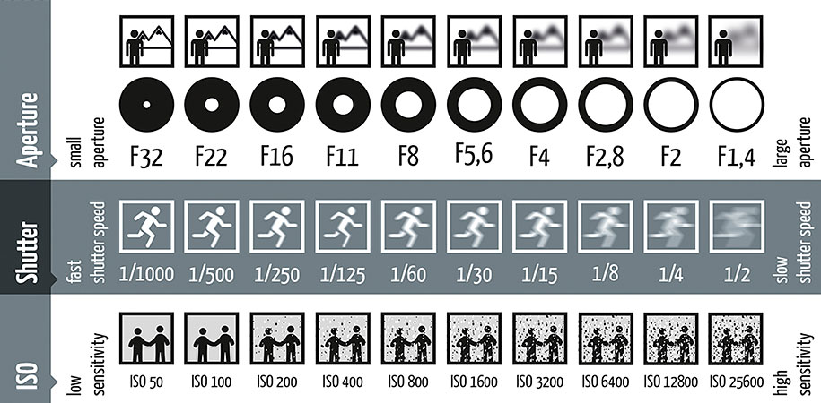

Osnovni pojmovi
ISO
ISO ili ISO osjetljivost označava osjetljivost senzora (ili filma) na svjetlost. Niža razina ISO osjetljivosti znači da je senzor kamere manje osjetljiv na svjetlost. Sam koncept ISO osjetljivosti je vrlo jednostavan za shvatiti. Više ISO vrijednosti dovest će do veće osjetljivosti senzora kamere, što će stvarati svjetlije fotografije. No u isto vrijeme, povećavanje ISO osjetljivosti može dovesti i do stvaranja više šuma u fotografijama (šum se može prepoznati po točkicama ili ”zrnatosti” fotografije).
Otvor blende
Otvor blende određen je veličinom otvora unutar kojeg svjetlost može doprijeti do same kamere. Otvor blende označen je slovom ”f” i kosom crtom (/). Što je ”f” manji, to je otvor širi i to veća količina svjetlosti može doprijeti do kamere (što će rezultirati boljom kvalitetom fotografija i videozapisa, pogotovo u uvjetima dobre osvijetljenosti).
Brzina okidača kamere
Svaka kamera na sebi ima okidač. On onemogućuje svjetlosti prodor do senzora sve dok ne bude aktiviran. Nakon što je okidač kamere aktiviran, on se otvara i u senzor kamere počne dopirati svjetlost. Ono vrijeme u kojem okidač kamere ostaje otvoren (i vrijeme u kojem on dopušta svjetlosti da uđe u senzor kamere) naziva se brzinom okidača kamere. Brzina okidača kamere obično se mjeri u sekundama i djelićima sekundi. Na primjer, brzina okidača od 1/100 znači da će okidač izložiti senzor svjetlosti jednu stotinu sekunde, dok 1/2 znači da će okidač izložiti senzor svjetlosti samo jednu polovicu sekunde. Ako korisnik odluči ostaviti okidač otvoren nekoliko sekundi, to se obično naziva fotografiranjem uz duže izlaganje, često korišten način za astrofotograije, dok se suprotno koristi za sportsku fotografiju ili fotografiranje životinja u pokretu.
